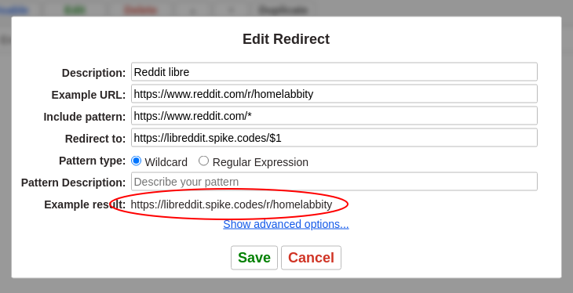

Alternative website usage with URL redirect Chrome extension
Motivation
Some websites have valuable content, but their UIs seem like they’re designed to humiliate you by:
- Forcing you to use their mobile app (even if the website itself would be enough for you)
- Force you to log in
- Doing whatever they want with your data
Great examples are Reddit and Instagram.
Alternative UI implementations
To introduce you to the concept, we take Reddit as an example. Let’s decouple Reddit into different components:
- Reddit’s content
- This is the one that truly has value to you
- Reddit’s UI
- This is the one designed to humiliate you
What if you could use Reddit’s content but swap out the UI for a nicer implementation?
Meet Libreddit, which is a:
An alternative private front-end to Reddit
You can host Libreddit yourself (I recommend Fly.io) or you can use any of its public instances.
It doesn’t matter whether you’ll be running a private instance or using a public instance, and it’s not the point of this article - moving on.
The problem
Using Libreddit to explicitly go browse some Reddit content is not a problem, but across the internet you’ll encounter links to Reddit content. Let’s say:
- You did a websearch for a question and the search engine links to Reddit content
- Someone on Twitter posted a link to Reddit
- etc etc.
So we have different use cases:
- You’ll just open Libreddit to just browse some content there
- You’ll come across an explicit content link that you’d want to consume
- This is the problem.
The problem is that you’ll come to a link like this:
https://www.reddit.com/r/homelab/comments/sl9upi/10inch_rack_ubiquiti_home_network/
To use Libreddit, you’d have to, before opening it, manually change it to this:
https://libreddit.spike.codes/r/homelab/comments/sl9upi/10inch_rack_ubiquiti_home_network/
(that particular public instance is just an example)
NOTE: This simplistic domain replacement is only possible if the alternative frontend has been designed to mimic the URL path structure of the official frontend.
The solution
Why do that replacement manually? You could use a browser extension to automatically redirect links to the official website to your choice of private frontend.
You’d need to set up a redirect rule like this:
https://www.reddit.com/*
->
https://libreddit.spike.codes/*
(in pseudo, the * is not an official “grammar”)
This is how seamless it can be:
Concrete recommendation
Redirector seems fine.
(Warning: Chrome doesn’t at all seem to support extensions on mobile.)
After installing, you’ll need in its settings to set up a rule:


Thanks for reading! 😍
If you like my writing, consider following me on Twitter.
Stay updated on my blog posts & projects - sign up for
my newsletter. 🚀
No spam, unsubscribe any time.
RSS also available.